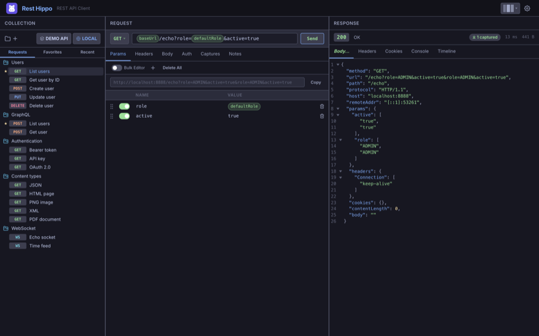

Rest Hippo User Guide
Rest Hippo is a fast, cross-platform desktop REST API client — like Postman or Insomnia — for building, sending, and inspecting HTTP, GraphQL, and WebSocket requests. It runs natively (no browser CORS limits), stores everything in local files, and ships with a built-in theme editor and a bundled UI font.

This guide walks through everything Rest Hippo can do, from sending your first request to OAuth 2.0, environments, GraphQL schema introspection, and encrypted backups.
Contents
| Page | What's inside |
|---|---|
| Getting Started | Install, the three-panel layout, and sending your first request |
| Collections & the Tree | Organizing requests into collections and folders; Favorites and Recent |
| Building Requests | Methods, the URL bar, query params, headers, and body editors |
| Authentication | API Key, Basic, Bearer, Digest, NTLM, AWS SigV4, and OAuth 2.0 |
| Variables & Environments | {{variables}}, environments, collection/folder scopes, and response captures |
| Functions | Built-in {{ }} functions: UUIDs, timestamps, encoding, request outputs, and run |
| GraphQL | The query/variables editor, schema introspection, and validation |
| WebSockets | Connecting, sending frames, and reading the frame log |
| Reading Responses | Body rendering, previews, headers, cookies, timeline, and search |
| Scripts | Pre-request & after-response JavaScript with the hippo.* API |
| Import, Export & Backup | Postman/Insomnia/OpenAPI/HAR and whole-workspace backups |
| Settings & Themes | Appearance, layouts, proxy, retries, and the theme editor |
| Keyboard Shortcuts | Every shortcut in one place |
A quick tour
Rest Hippo's window has three panels:
- Collections (left) — your saved requests, organized into collections and folders, plus the Favorites and Recent tabs. Its toolbar holds the collection and environment selectors.
- Request (center) — where you set the method, URL, query parameters, headers, body, authentication, and post-response captures.
- Response (right) — the status, timing, body (syntax-highlighted), headers, cookies, console output, and a request timeline.
At the top right is Settings. From there you can rearrange the three panels into four different layouts and restyle everything with themes.
The screenshots in this guide use a demo collection called Demo API and a Local environment pointing at a test server. Yours will show your own collections.
Ready? Start with Getting Started.